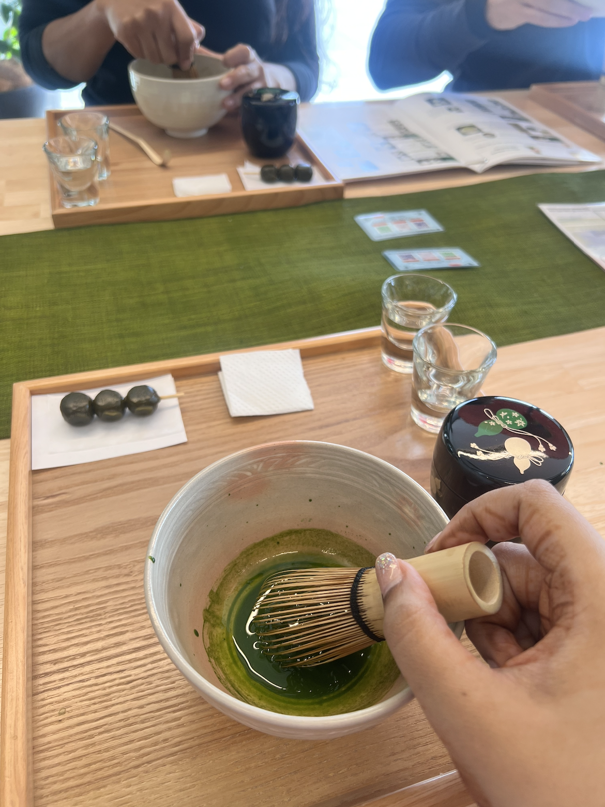
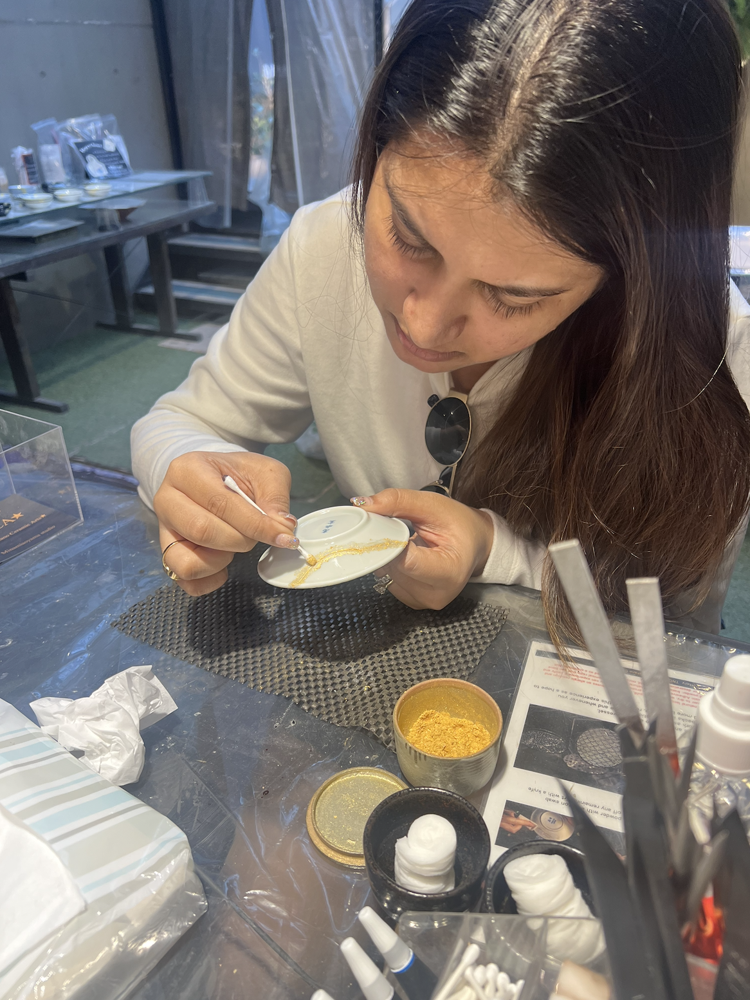
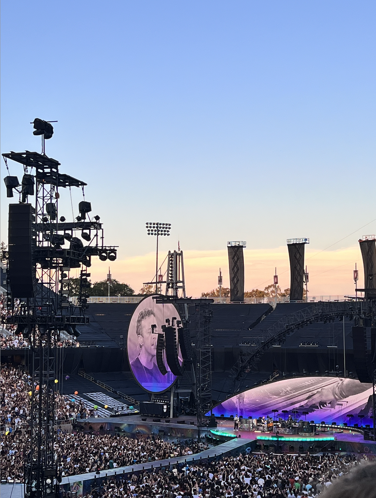
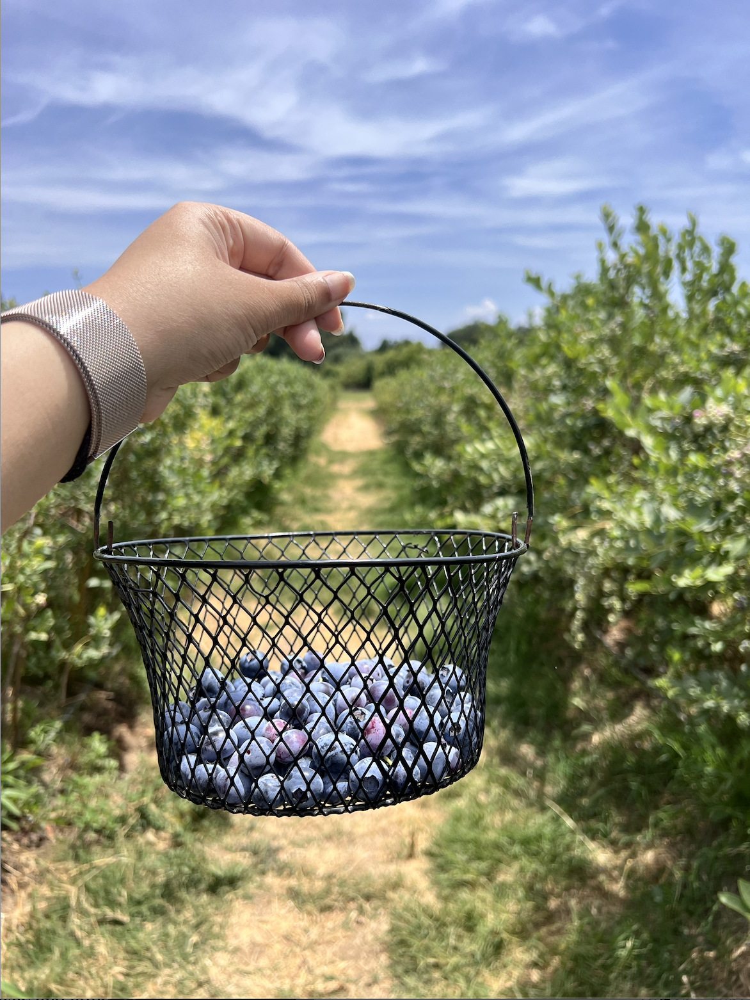

| Home | About Me | Projects | Hobbies |
|---|
(Generated Text with ChatGPT) Outside of design, I enjoy exploring cultures through art, music, and food. These experiences shape how I observe details and approach creativity.
I enjoy understanding how cultures express identity through everyday life, spaces, and traditions.

Experiencing the Japanese Matcha tea ceremony, known as Chanoyu.
Art influences how I think about composition, color, and storytelling.

Exploring the Kintsugi art of mending with gold.
Music shapes the mood of experiences and connects me to different environments.

Experienced the highly immersive Coldplay Concert, that felt like a sensory feast.
Food allows me to connect with culture through taste, presentation, and shared experiences.

Engaging with food in the purest form, featuring Berry picking.